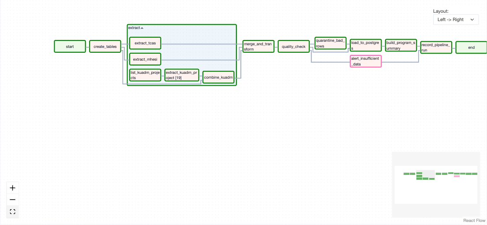
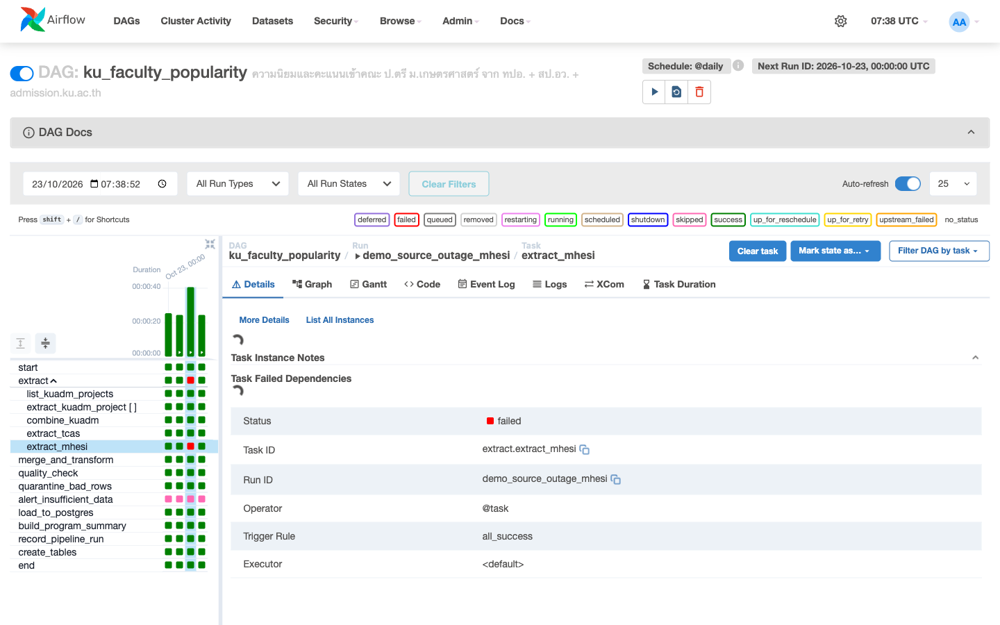
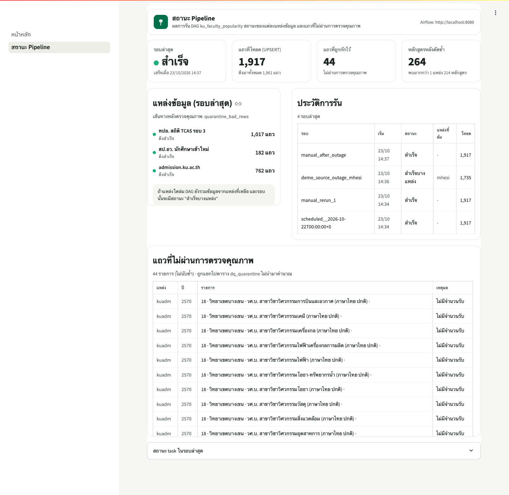
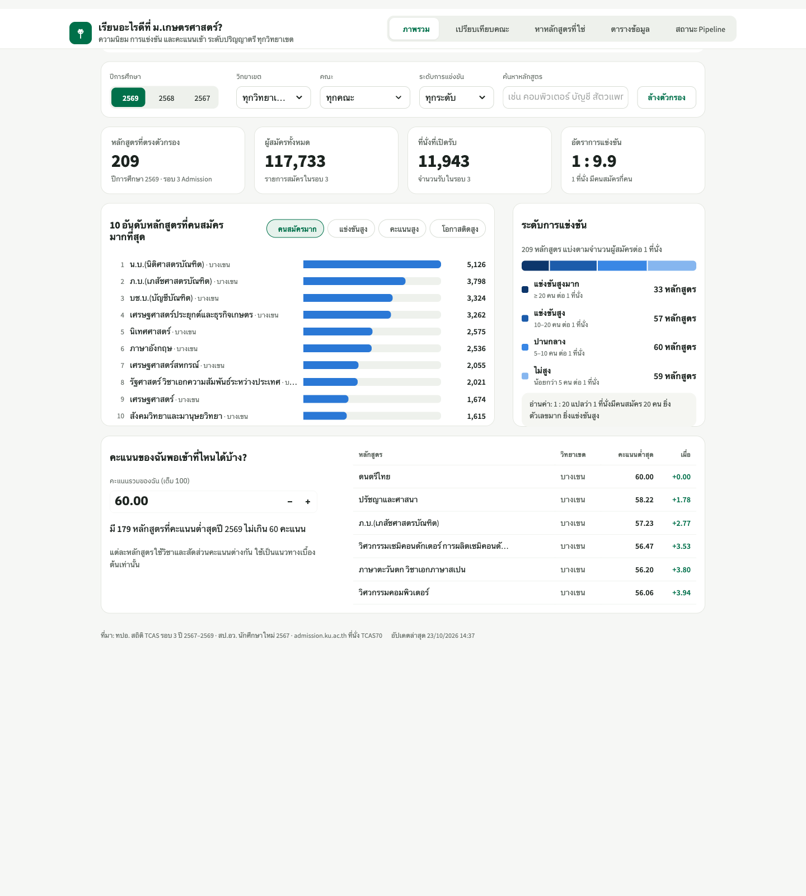

ระบบรวบรวมข้อมูลการรับเข้าศึกษาของ ม.เกษตรศาสตร์ จาก 3 หน่วยงาน ผ่าน Apache Airflow แล้วจัดเก็บใน PostgreSQL เพื่อตอบคำถามว่า หลักสูตรใดมีผู้สนใจมากที่สุด แข่งขันสูงเพียงใด และต้องใช้คะแนนเท่าไร ผลลัพธ์แสดงผ่าน Dashboard ที่อ่านข้อมูลจาก PostgreSQL โดยตรง
| แหล่งข้อมูล | วิธีดึงข้อมูล | ข้อมูลที่ได้ (เฉพาะ มก.) | จำนวนแถว |
|---|---|---|---|
| 1. ทปอ. (mytcas.com) | Web scraping หน้าสถิติด้วย BeautifulSoup เพื่อหาลิงก์ไฟล์ แล้วดาวน์โหลด Excel | สถิติ TCAS รอบ 3 ปี 2567–2569: จำนวนรับ ผู้สมัคร คะแนนต่ำสุด–สูงสุด | 1,017 |
| 2. สป.อว. (data.go.th) | CKAN API ค้นหาลิงก์ไฟล์ แล้วดาวน์โหลด CSV | จำนวนนักศึกษาใหม่ ป.ตรี ปี 2567 (รวมยอดชาย–หญิงเป็นยอดต่อหลักสูตร) | 182 |
| 3. admission.ku.ac.th | Web scraping ตาราง HTML ของ 19 โครงการ ด้วย Dynamic Task Mapping | จำนวนรับ TCAS ปี 2570 แยกตามโครงการและสาขา | 762 |
| ระดับ | สิ่งที่ทำและหลักฐาน | ผล |
|---|---|---|
| ระดับ 1 | DAG ทำงานครบ Extract → Transform → Load ลง PostgreSQL · Dashboard (Streamlit) อ่านจากฐานข้อมูลโดยตรง แสดงทั้งตารางและกราฟ | ครบ |
| ระดับ 2 | ดึง 3 แหล่งพร้อมกันใน TaskGroup extract และแปลงเป็น schema เดียว (admission_stats) ·
โหลดแบบ UPSERT ด้วยคีย์ (source, academic_year, source_record_id) รันซ้ำแล้วจำนวนแถวยังเท่าเดิม ·
Dashboard มี KPI 4 ตัว ตัวกรอง 5 แบบ และช่องกรอกคะแนนของผู้ใช้ | ครบ |
| ระดับ 3 | ทนต่อแหล่งข้อมูลล่ม: ขั้น merge_and_transform ใช้ trigger_rule=all_done ทดสอบโดยจำลองให้แหล่ง อว. ล่ม ระบบยังโหลดได้ 1,735 แถว และบันทึกสถานะเป็น partialตัดข้อมูลซ้ำข้ามแหล่ง: จับคู่ด้วยวิทยาเขต + ชื่อสาขาที่ปรับให้เป็นมาตรฐาน ( major_key) ได้ 264 หลักสูตร โดย 214 หลักสูตรพบตั้งแต่ 2 แหล่งขึ้นไปตรวจคุณภาพและแยกเส้นทาง (Branch): ผ่านทั้งหมด → โหลด · พบแถวผิดปกติ → แยกไปตาราง dq_quarantine แล้วโหลดส่วนที่เหลือ · ข้อมูลน้อยกว่า 100 แถว → แจ้งเตือนและไม่เขียนทับข้อมูลเดิม | ครบ |
| โบนัส | Dynamic Task Mapping (extract_kuadm_project.expand() สร้าง 19 task) และหน้า "สถานะ Pipeline" บนเว็บ | ครบ |
จริยธรรมข้อมูล: ไม่ใช้ Selenium · ตรวจ robots.txt ทุกเว็บก่อนดึง (data.mhesi.go.th ไม่อนุญาต /api/ จึงใช้ API ของ data.go.th แทน) · หน่วงเวลา 1 วินาทีต่อคำขอ · ข้อมูลทั้งหมดเป็นสถิติภาพรวม ไม่มีข้อมูลส่วนบุคคล (PDPA)

ku_faculty_popularity (Graph view): ดึง 3 แหล่งขนานกัน → รวมและแปลงข้อมูล → ตรวจคุณภาพ → โหลด → สรุปผล → บันทึกการรัน
extract_mhesi ล้มเหลว (สีแดง) แต่ขั้นตอนถัดไปยังทำงานต่อและโหลดข้อมูลจาก 2 แหล่งที่เหลือ

| อาการ | คำสั่ง docker compose up --build ล้มเหลว (input/output error) จากนั้น Docker daemon หยุดทำงาน และทุกคำสั่งแจ้ง ENOSPC |
| หาสาเหตุ | df -h พบพื้นที่เหลือ 0 B · du -sh พบไฟล์ Docker.raw ขนาด 30 GB · docker system df พบ image ที่ไม่ใช้งาน 7.9 GB |
| แก้ไข | ล้าง cache ที่สร้างใหม่ได้ และรัน docker image prune -a กับ builder prune ได้พื้นที่คืน 10.6 GB · เลือกใช้ LocalExecutor และ image เดียวร่วมกันเพื่อลดขนาด |
| อาการ | ชื่อคอลัมน์คะแนนต่างกันในแต่ละปี (ปี 2569 มีคอลัมน์ "DS" และ "รหัสโครงการ" เพิ่ม) และข้อมูลเขียนทับกันเมื่อ UPSERT |
| หาสาเหตุ | เปรียบเทียบ header ของทุกไฟล์ และนับรหัสหลักสูตรที่ซ้ำ (ปี 2569 ซ้ำ 56 รหัส) |
| แก้ไข | เลือกคอลัมน์ด้วยคำสำคัญและใช้ผลการประมวลผลรอบสุดท้าย · กำหนด source_record_id = รหัสหลักสูตร | รายละเอียด | วิชาเอก | รหัสโครงการ |
| อาการ | "น.บ.(นิติศาสตรบัณฑิต)" จาก ทปอ. ไม่ถูกจับคู่กับ "นิติศาสตร์" จาก อว. ทำให้หลักสูตรเดียวกันแยกเป็น 2 แถว |
| หาสาเหตุ | ค้นหาแถวในตารางสรุปที่พบเพียง 1 แหล่ง (n_sources = 1) แต่ชื่อใกล้เคียงกับแถวอื่น |
| แก้ไข | ปรับฟังก์ชัน major_key ให้ใช้ชื่อหลังคำว่า "สาขาวิชา" หรือชื่อปริญญาในวงเล็บ และตัดคำว่า "บัณฑิต" ช่องว่าง และไม้ทัณฑฆาต ทำให้หลักสูตรที่จับคู่ได้ตั้งแต่ 2 แหล่งเพิ่มเป็น 214 หลักสูตร |
| อาการ | 44 แถวจาก admission.ku.ac.th ระบุว่า "*จำนวนรับรวมกับเงื่อนไขอื่น" แทนตัวเลข |
| หาสาเหตุ | ตรวจเหตุผลในตาราง dq_quarantine และเปิด HTML ของหน้าโครงการต้นทาง |
| แก้ไข | เพิ่มกฎตรวจคุณภาพ "ต้องมีจำนวนรับ" และแยกแถวเหล่านี้ออกไม่นำมาคำนวณ เพื่อป้องกันการนับที่นั่งซ้ำ |
| ช่วงเวลา | งานที่ทำ |
|---|---|
| 13:00–13:55 | วิเคราะห์โจทย์และแตกเป็นรายการตามระดับ · สำรวจแหล่งข้อมูลจริงก่อนจองหัวข้อ (robots.txt, รูปแบบหน้าเว็บ, จำนวนแถว) · เลือกหัวข้อที่ทั้ง 3 แหล่งเป็นเรื่องเดียวกัน |
| 14:00–14:10 | สร้าง repository และ push commit แรกทันที · เขียนส่วนดึงข้อมูล 3 แหล่ง และทดสอบนอก Docker ก่อนเพื่อลดเวลาแก้ไขใน Airflow |
| 14:10–14:45 | พัฒนาส่วน Transform, ตรวจคุณภาพ, UPSERT และ Dashboard ควบคู่กับแก้ปัญหาดิสก์เต็ม · รัน DAG จริง ทดสอบรันซ้ำ และจำลองแหล่งข้อมูลล่ม |
| 14:45–15:45 | ออกแบบ Dashboard ใหม่ด้วย Claude Design และปรับให้ตรงแบบ · เขียน README และรายงาน · clone repository ใหม่เพื่อทดสอบการรันตั้งแต่ต้น |
หลักการจัดลำดับ: ทำระดับ 1 ให้ทำงานได้ครบทั้งระบบก่อน จากนั้นจึงเพิ่มระดับ 2, 3 และโบนัสตามลำดับ งานที่ตัดออกและเหตุผล: